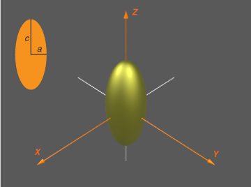

ScriptSolveForFixed
An example script showing how to obtain the field expansion coefficients and far-field cross-sections for a spheroid at a single wavelength, and fixed orientation. Outputs the far-field cross-sections with accuracy estimates.
Contents
Instructions
Note that you need to run InitPath in the root folder first to add required folders to the Matlab path so that functions can be called Alternatively, uncomment the following line
run('..\InitPath');
The following parameters should be defined:
- a: semi-axis along x,y
- c: semi-axis along z
- k1: wavevector in embedding medium (of refractive index nM) (k1=2*pi*nM/lambda)
- s: relative refractive index (s=n_Particle / nM)
- N: number of multipoles for T-matrix
- nNbTheta: number of thetas for quadratures
- sIncType: string such a 'KxEz' defining the incident field
- or stIncPar: struct defining the incident field (alternative to sIncType)
clear all close all
Parameters of the scattering problem
We define parameters for a gold nanorod in water, modeled as a prolate spheroid

a = 10; % short semi-axis in nm c = 50; % long semi-axis in nm lambda = 650; % wavelength in nm epsilon2 = epsAu(lambda); % dielectric function of particle epsilon1 = 1.33^2; % dielectric constant of embedding medium (water) % Incident excitation polarised along main axis sIncType = 'KxEz';
Convergence parameters
% Maximum multipole order for T-matrix and series expansions of fields N = 40; % Number of points for Gaussian quadratures to compute integrals in P and Q matrices nNbTheta = 120;
Collect simulation parameters in a structure
k1 = 2*pi/lambda * sqrt(epsilon1); s = sqrt(epsilon2)/sqrt(epsilon1); stParams.a=a; stParams.c=c; stParams.k1=k1; stParams.s=s; stParams.N=N; stParams.nNbTheta=nNbTheta; stParams.sIncType = sIncType;
Optional control parameters
stOptions.bGetR = false;
stOptions.Delta = 0;
stOptions.NB = 0; % NB will be estimated automatically
stOptions.bGetSymmetricT = false;
T-matrix calculation
tic; % timer % Solve for T-matrix stC = slvForFixed(stParams, stOptions); % use this call instead to keep the expansion coefficients for further % processing % [stC, stAbcdnm] = slvForT(stParams,stOptions); fprintf('T-matrix (N = %d) ... done in %.f seconds.\n', N, toc); % To test for convergence and accuracy for a given set of parameters, one % can for example repeat the calculation with N=N+5 and nNbTheta=nNbTheta+5 % as illustrated below fprintf('Convergence testing...\n'); tic; stParams2=stParams; stParams2.N=stParams2.N+5; stParams2.nNbTheta=stParams2.nNbTheta+5; [stC2, ~] = slvForFixed(stParams2, stOptions); fprintf('\nT-matrix (N = %d) ... done in %.f seconds.\n\n', N, toc); fprintf('Results for a=%g, c=%g, k1=%g, s=%g+%gi, N=%d, Nt=%d\n',... a, c, k1, real(s),imag(s), N, nNbTheta); fprintf('\nCross sections for fixed excitation (and estimated accuracy):\n'); fprintf('Cext = %.20g, relative error: %.5g\n', stC.Cext, abs(stC.Cext./stC2.Cext-1)); fprintf('Csca = %.20g, relative error: %.5g\n', stC.Csca, abs(stC.Csca./stC2.Csca-1)); fprintf('Cabs = %.20g, relative error: %.5g\n', stC.Cabs, abs(stC.Cabs./stC2.Cabs-1)); fprintf('\nCross sections for orientation-averaged excitation (and estimated accuracy):\n'); fprintf('<Cext> = %.20g, relative error: %.5g\n', stC.Cextoa, abs(stC.Cextoa./stC2.Cextoa-1)); fprintf('<Csca> = %.20g, relative error: %.5g\n', stC.Cscaoa, abs(stC.Cscaoa./stC2.Cscaoa-1)); fprintf('<Cabs> = %.20g, relative error: %.5g\n', stC.Cabsoa, abs(stC.Cabsoa./stC2.Cabsoa-1));
sphCalculatePQ: Calculating P,Q for 41 m-values with N_Q = 40, N_B = 41, N_Theta = 120 T-matrix (N = 40) ... done in 2 seconds. Convergence testing... sphCalculatePQ: Calculating P,Q for 46 m-values with N_Q = 45, N_B = 45, N_Theta = 125 T-matrix (N = 40) ... done in 2 seconds. Results for a=10, c=50, k1=0.0128564, s=0.119065+2.67664i, N=40, Nt=120 Cross sections for fixed excitation (and estimated accuracy): Cext = 509.7977525837234225, relative error: 3.6637e-15 Csca = 99.483485613090834931, relative error: 1.6653e-15 Cabs = 410.31426697063261599, relative error: 4.1078e-15 Cross sections for orientation-averaged excitation (and estimated accuracy): <Cext> = 249.93383391529411597, relative error: 1.7208e-14 <Csca> = 36.305224719494638919, relative error: 2.8866e-15 <Cabs> = 213.62860919579946994, relative error: 1.9651e-14